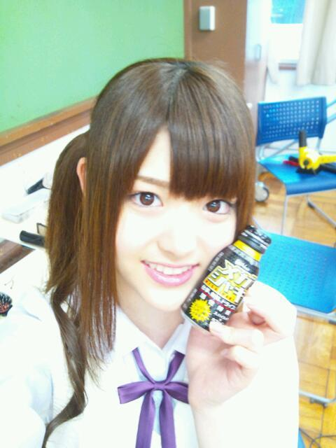

2012/0720Fri求めても無駄っ(o・・o)
こんばんごっっ(o・・o)
さゆりんごっ(o・・o)
やっほー
さゆりんやでな〜っ(o・・o)/
先日はメガシャキさんの記者会見でしたー(*^^*)
走れ！bicycleも披露さして
いただきました！
夏は暑くてだらだらしちゃうんやけど
メガシャキ飲んでシャキっと
頑張ろー(*^^*)♪

色々なメディアの方が
取りあげてくださって嬉しい！
ＰＯＮ！さんでは
さゆりんごぱーんちっ(o・・o)が
またまたすべる。笑
松村すべりんごでございます。
なんか、前ふりつけてから
やったほうがいいんかな〜っ(o・・o)？
んー...
いいのが思いつくまでは
すべりんごで頑張ろー(*^^*)♪笑
ほんでから
沢山の質問ありがとうございます♪
少しずつ答えていきたいと
思います！(*^^*)
ほな、さっそく...
Ｑ、乃木どこの浴衣は自分で選んだん？
Ａ、スタイリストさんやスタッフさんに
選んでいただきました！
でもみんなそれぞれ
雰囲気にあった浴衣で
すごく可愛かったですね♪
さゆりんもあの浴衣すごくお気に入りです(*^^*)♪
Ｑ、この夏はビキニに挑戦するのー？
Ａ、そうやね〜
この夏の目標としてあげてたんですが、
プライベートで海に行く予定はなくてですね〜...
お仕事でやるかも？
さぁどうなんでしょー( *・ω・)？
って感じです！すみません(T-T)
Ｑ、メンバーで頭いいと思うのは？
Ａ、そうですね〜
やっぱりキャプテンのれいかは
すごいハキハキちゃんと喋るし
しっかりしてるんだと思います！
それと、やっぱり年長組はみんな
しっかり者やと思いますよ！
一応松村も年長組のしっかり者なのだーヽ(・∀・)ノわはははー笑
なんだこりゃーヽ(・∀・)ノ笑
Ｑ、ほんまに日村さん嫌いなん？
Ａ、あ〜心配しやんで〜
さゆりん日村さんのこと大...げふっ
ごほごほっ（×_×；）笑
なんだこりゃーヽ(・∀・)ノ笑
Ｑ、さゆりんの横の髪の毛はいつから？
Ａ、高校が厳しくて髪の毛くくらな
あかんかって、ずっと今の
サイドポニーやったんよー
やからずっと変わってません〜(>_<)
しょっかくもね〜
友達にも「せっかくアイドルなったのに
髪型、高校のままやん」って言われます〜
ざんねん〜(・∀・)あは〜ん
ちなみに顔まわりの髪の毛を
まっちゅんは【もみあげ】と
呼んでます〜(*^^*)
全然広まりませーん
ざんねん〜(・∀・)笑
Ｑ、乃木坂に入って一番変化したのは？
Ａ、一番ってか
すべて変わったな〜
夢も変わったし、生活も...
でも、やっぱり一番は
自撮りをするようになったことかな〜(*^^*)
入るまでは一枚も無かったのに
今では公開までしてんからね〜(>_<)
すっげぇ♪笑
さゆりんの恥ずかしい自撮りが
待受のあなた！
......好きっ！
ってなわけで
今日はここまで！
また更新します！
今日はゆったんの誕生日☆
うふふっ♪
2012/07/20 14:42
コメント(389)
すべりんご＼(^∀^)／ｗｗｗｗｗｗｗｗ
でもおいしかったよ
バイバイ
さゆりんが待ち受けだよ(*^^*)
すべりんごって面白いねー
ごめん！自分の待ち受けさゆりんじゃない
ごめん！自分の待ち受けさゆりんじゃない
俺もメガシャキ飲んでみよっかな～♪
メガシャキ飲むしかー！
さゆりんごパンチはやめちゃダメだ！
たとえすべっても！
シャキ！！！！！！！！
こんばんごっ(o・・o)
いつでもどこでも、さゆりんごぱんち。
ブレてなくて良いんじゃない？
まだ、笑いで済む年齢なんだから(笑)
いつでもどこでも、さゆりんごぱんち。
ブレてなくて良いんじゃない？
まだ、笑いで済む年齢なんだから(笑)
PON見たけど見事なすべりんごだったね
ハートの強さ憧れます(￣▽￣)
ハートの強さ憧れます(￣▽￣)
さゆり～ん♪
やっぱ日村殿大嫌いなんだね！笑
良いと思う…好みは人それぞれだし♪
さゆりんごパンチ生で見てみたい(≧∇≦)
今の髪型はめっちゃ好きだけど、いろんな髪型のさゆりんも見てみたい↑↑
やっぱ日村殿大嫌いなんだね！笑
良いと思う…好みは人それぞれだし♪
さゆりんごパンチ生で見てみたい(≧∇≦)
今の髪型はめっちゃ好きだけど、いろんな髪型のさゆりんも見てみたい↑↑
すべりんごパーンチ（笑）
メガシャキしかしか(´Д`)
メガシャキしかしか(´Д`)
こんばんわ(^O^)
今日も１日お疲れ様だね☆
さゆりん♪♪
さゆりんの浴衣姿似合ってたよ☆☆
あっ♪♪
１つだけ質問☆
さゆりんの好きなことって何？(^O^)
これをやってる時は、無我夢中になってしまうんよ?♪
みたいなこと☆
もしあったら教えて♪
楽しみにしてるよ☆
今日も１日お疲れ様だね☆
さゆりん♪♪
さゆりんの浴衣姿似合ってたよ☆☆
あっ♪♪
１つだけ質問☆
さゆりんの好きなことって何？(^O^)
これをやってる時は、無我夢中になってしまうんよ?♪
みたいなこと☆
もしあったら教えて♪
楽しみにしてるよ☆
めがしゃき今日みんなに宣伝しといたよ!!わら
あとPON見たけどさゆりんご滑ってたかな？わら
俺はそういうとこも好き!(^^)!
ほなまたね。
あとPON見たけどさゆりんご滑ってたかな？わら
俺はそういうとこも好き!(^^)!
ほなまたね。
すべりんこんばんわ＼(^O^)／
てか日村さん…
そこは嘘でも大好きと言っとこうよ(笑)
てか日村さん…
そこは嘘でも大好きと言っとこうよ(笑)
お疲れ(^-^)
メガシャキのCM早く見たいよー(泣)
メガシャキ買ったことないけど買ってみようかな...
さゆりんごパンチ俺は好きだけどな(笑)
まぁすべってなんぼだと思うよ(^^)
もう一度言うけど俺はさゆりんごパンチ好きやで！
優里誕生日おめでとって
ブログにもちゃんとコメしたよ＼(^o^)／
メガシャキのCM早く見たいよー(泣)
メガシャキ買ったことないけど買ってみようかな...
さゆりんごパンチ俺は好きだけどな(笑)
まぁすべってなんぼだと思うよ(^^)
もう一度言うけど俺はさゆりんごパンチ好きやで！
優里誕生日おめでとって
ブログにもちゃんとコメしたよ＼(^o^)／
さゆりんごぱ～んちは、
やっぱり前フリがないと難しいのでは｡｡｡
こんなんどう？
｢みんな～、覚悟はええかぁ？
いっくでぇ、さゆりんごぱ～んち！！｣
どや？（笑）
俺の待受はずっと前からさゆりんごやでぇ♪
だって可愛すぎるからっ！ )^o^(
やっぱり前フリがないと難しいのでは｡｡｡
こんなんどう？
｢みんな～、覚悟はええかぁ？
いっくでぇ、さゆりんごぱ～んち！！｣
どや？（笑）
俺の待受はずっと前からさゆりんごやでぇ♪
だって可愛すぎるからっ！ )^o^(
さゆりんごパンチがあんなにすべるとは・・・
20時0分まで予備校の授業頑張る～
20時0分まで予備校の授業頑張る～
こんちは☆
８回目のコメントです(^^)v
pon見たよ！まさか、さゆりんでてくると思ってなかったから
うれしいサプライズでした！
しかも、さゆりんごパンチ見事にすべってたね！！
逆に笑えたよ！わら
自分就活中でその日午後から面接だったんだけど
さゆりんにパワーもらえました！ありがとー☆
今度メガシャキ飲んでみよっかな。
メガシャキ飲んで目がシャキーンなって就活がんばれるかも！！
それでは！v
８回目のコメントです(^^)v
pon見たよ！まさか、さゆりんでてくると思ってなかったから
うれしいサプライズでした！
しかも、さゆりんごパンチ見事にすべってたね！！
逆に笑えたよ！わら
自分就活中でその日午後から面接だったんだけど
さゆりんにパワーもらえました！ありがとー☆
今度メガシャキ飲んでみよっかな。
メガシャキ飲んで目がシャキーンなって就活がんばれるかも！！
それでは！v
さゆりんごは神的にかぁいい(^o^)
可愛すぎて辛い←
可愛すぎて辛い←
まっちゅんヤッホー( ￣∇￣)ノ
メガシャキ見事に滑ったらしいな(笑)
メガシャキ飲んだことないから挑戦してみるわーw
俺の待受は当然まっちゅん１択やで(照)
ほなねﾉｼ
メガシャキ見事に滑ったらしいな(笑)
メガシャキ飲んだことないから挑戦してみるわーw
俺の待受は当然まっちゅん１択やで(照)
ほなねﾉｼ
こんばんりんごヨーグルトーっ(^o^)/
メガシャキ！
夏バテにいいかも
栄養ドリンク系の味けっこう好きかも
夜飲んだら寝れなくなるかも(^-^;
すべりんごしてるさゆりんも素敵だよ！笑
逆に言い終わった後に一言付け加えるとかは？
さゆりんごぱーんちっ、てへっ
とか？
メガシャキ！
夏バテにいいかも
栄養ドリンク系の味けっこう好きかも
夜飲んだら寝れなくなるかも(^-^;
すべりんごしてるさゆりんも素敵だよ！笑
逆に言い終わった後に一言付け加えるとかは？
さゆりんごぱーんちっ、てへっ
とか？
すべりんご面白いな～（笑）
俺も高校の時は校則厳しかったよ～
私立だったからね
その飲み物飲みたいなあ(^O^)
俺も高校の時は校則厳しかったよ～
私立だったからね
その飲み物飲みたいなあ(^O^)
おつかりんご(^o^)/
俺も質問したいんやけど
なれるならまだ看護士になりたいって思う？
よかったら答えて♪
メガ～シャキッ
すべりんご絶対かわいい
おれの高校もキビシイ
近高(;´д｀)
質問します
さゆりんにはどうすれば会えるん？
さらばじゃ
すべりんご絶対かわいい
おれの高校もキビシイ
近高(;´д｀)
質問します
さゆりんにはどうすれば会えるん？
さらばじゃ
おつかれもん！
こんばりんご！
メガシャキ飲んだことない！
でもさゆりんCMやってるし、試してみるよー。
丁度試験期間だしね☆
すべりんごとかwww
開き直っちゃってるwww
そろそろ次の技編み出しちゃいますか笑
もっと受けそうなやつファンから公募したら？？
3rdのPVでてっきり水着解禁かと思ってたんだよねー。
違ってちょっとがっくり。
まあいつか雑誌の撮影でやるっしょ！
期待してるよ！
さゆりんの恥ずかしい自撮り壁紙じゃないや←
ヲタ失格だなー。
壁紙は愛犬ちゃんだよ。
そして俺の質問スルーされたあああ。
次に来ますよーに。
すべりんごぱーんち！！
 まっきっき
まっきっき
こんばりんご！
メガシャキ飲んだことない！
でもさゆりんCMやってるし、試してみるよー。
丁度試験期間だしね☆
すべりんごとかwww
開き直っちゃってるwww
そろそろ次の技編み出しちゃいますか笑
もっと受けそうなやつファンから公募したら？？
3rdのPVでてっきり水着解禁かと思ってたんだよねー。
違ってちょっとがっくり。
まあいつか雑誌の撮影でやるっしょ！
期待してるよ！
さゆりんの恥ずかしい自撮り壁紙じゃないや←
ヲタ失格だなー。
壁紙は愛犬ちゃんだよ。
そして俺の質問スルーされたあああ。
次に来ますよーに。
すべりんごぱーんち！！
さゆりんごさん、うぃっす。
ＰＯＮ見てたよ。さゆりんごぱんちですべって、バッドボーイズのこの中で私服誰が今ひとつ？という質問でキャプテンに指さされ踏んだりけったりでやんしたな 。
。
明日の乃木どこでなにやらお知らせがあるとホームページ上で告知あったけど、何やろ？まあ見りゃわかるか。ではでは
ＰＯＮ見てたよ。さゆりんごぱんちですべって、バッドボーイズのこの中で私服誰が今ひとつ？という質問でキャプテンに指さされ踏んだりけったりでやんしたな
明日の乃木どこでなにやらお知らせがあるとホームページ上で告知あったけど、何やろ？まあ見りゃわかるか。ではでは
只今名古屋から帰宅中(^^)/
今日はみそかつ食べた。
まだお腹にもたれてる。
わらぞうりみそかつおそるべし(^_^ゞ
さゆりんごパ?ンチのあとに空気を読んでから一言いれるしか?！
なにがいいかな？
パンチのあとこっそりひっこめてリーダーに脅されてやってると言い訳するとか(^-^ゞ
では、頑張ってね(^-^)/
かいりのパパでした(￣0￣)/
今日はみそかつ食べた。
まだお腹にもたれてる。
わらぞうりみそかつおそるべし(^_^ゞ
さゆりんごパ?ンチのあとに空気を読んでから一言いれるしか?！
なにがいいかな？
パンチのあとこっそりひっこめてリーダーに脅されてやってると言い訳するとか(^-^ゞ
では、頑張ってね(^-^)/
かいりのパパでした(￣0￣)/
さゆりんごぱ～んち
☆( ゜o(○=( ゜ο゜)o
☆( ゜o(○=( ゜ο゜)o
さゆ～！
すべりまくってもえぇやん！
そんなさゆも大好きやから♪
早くさゆに会いたい＞＜
もうほとんど病気やで…
携帯の待ち受け当たり前のようにさゆやで♪
あっ！今度東京であるスマホイベント申し込み
したけどさゆ来るんかな？
まぁ当選するかやけど
あとさゆに誕生日プレゼント買ったから♪
また渡すな～
さゆそぉとぉかゎぃぃょ！
すべりまくってもえぇやん！
そんなさゆも大好きやから♪
早くさゆに会いたい＞＜
もうほとんど病気やで…
携帯の待ち受け当たり前のようにさゆやで♪
あっ！今度東京であるスマホイベント申し込み
したけどさゆ来るんかな？
まぁ当選するかやけど
あとさゆに誕生日プレゼント買ったから♪
また渡すな～
さゆそぉとぉかゎぃぃょ！
さゆりん、おつかれさん いろいろ聞きたいねんけど、まずはタイトル。”求めても無駄”は何のことかな？ＰＯＮは関西は映らへんのよ～
いろいろ聞きたいねんけど、まずはタイトル。”求めても無駄”は何のことかな？ＰＯＮは関西は映らへんのよ～ さゆりんごパンチまたスベッたん？さゆりんごパンチは”急速冷凍効果”があるんやなあー。一瞬にしてその場が凍りつく
さゆりんごパンチまたスベッたん？さゆりんごパンチは”急速冷凍効果”があるんやなあー。一瞬にしてその場が凍りつく これはもう、新技開発するしかないんちゃう？でも、僕、個人的にはさゆりんごパンチもさゆりんごキックもさゆりんごビームも好きなんやけどなあ。で、さゆりんのビキニなんてめちゃめちゃ見たいけど、さゆりん、恥ずかしがりやからなあ。テレビでビキニとか、ようせえへんのちゃう？では、さゆりん、僕もメガシャキ飲んで頑張るから、さゆりんも頑張ってなー。さゆりんの個別握手会の券、いっぱい買ったから、たくさん話そうね。また会えるのを楽しみにしてるわー。
これはもう、新技開発するしかないんちゃう？でも、僕、個人的にはさゆりんごパンチもさゆりんごキックもさゆりんごビームも好きなんやけどなあ。で、さゆりんのビキニなんてめちゃめちゃ見たいけど、さゆりん、恥ずかしがりやからなあ。テレビでビキニとか、ようせえへんのちゃう？では、さゆりん、僕もメガシャキ飲んで頑張るから、さゆりんも頑張ってなー。さゆりんの個別握手会の券、いっぱい買ったから、たくさん話そうね。また会えるのを楽しみにしてるわー。


さゆりん(((o(*ﾟ▽ﾟ*)o)))
やっほい＼(^o^)／
メガシャキーン！！笑
俺は陽菜に目がシャキーン(*^^*)←あ
ゆったんおめおめ♪♪
ほなまた
更新待っとるよ！！
さゆりんごぱーんち
 はちみつ入り
はちみつ入り
☆☆☆☆☆☆中野のプーさん☆☆☆☆☆☆
やっほい＼(^o^)／
メガシャキーン！！笑
俺は陽菜に目がシャキーン(*^^*)←あ
ゆったんおめおめ♪♪
ほなまた
更新待っとるよ！！
さゆりんごぱーんち
☆☆☆☆☆☆中野のプーさん☆☆☆☆☆☆
今の髪型好きです。
まゆ坂46MVでもアップになった時（画面が全体的にピンクになる時）、洒落にならないくらい可愛いです。
あのMVで松村さんと白石だけ大きく抜かれてますよね。
流石、七福神です。
まゆ坂46MVでもアップになった時（画面が全体的にピンクになる時）、洒落にならないくらい可愛いです。
あのMVで松村さんと白石だけ大きく抜かれてますよね。
流石、七福神です。
さゆりんごパンチですべるさゆりんも可愛いよ。
さゆりんごパンチやめないでね。
メガシャキ滝に打たれて大変だったね。
サイドポニー高校から変わってないんだ。可愛いよサイドポニー！
by HS。
さゆりんごパンチやめないでね。
メガシャキ滝に打たれて大変だったね。
サイドポニー高校から変わってないんだ。可愛いよサイドポニー！
by HS。
そっきゃー新しい仇名ができましたな・・・すべすべさゆりんってどうでやんしょ。肌と滑るですべすべなんちて（笑）。そっきゃーこういう設定で撮影したんでやんすな～～。
なんか、リアルＣＭみたいな台詞がさゆりん丸から出てくるなんて大人になりましたなも～～ってそっか桐蔭だった（＾＾）。そっきゃー・・・まあ、それもそれでいいかもね。その後に意識的に真っ赤になれたら完璧ですよね（＾＾）
撮影があれば海辺にはいくでやんしょね・・・後は分かんないですけども・・・・。桜井ちゃんは色々とぶっ飛んでますからね・・・。あの
ＴＢＳの時とか・・・。まあ、リアルセブンティーンはああいう感じなんだろうなって思ったりもしますよね～～。日村嫌いの下りが面白いですね・・・。いやはやさゆりん丸ですわにわに。
高校から変わらないってのもなんからしいと言えばそうかなあ・・・。白石さんも色をアッシュにしたくらいですからね・・・これからなんでしょ（＾＾）。
自撮りゼロでアイドルなれちゃうんですね・・・・やっぱ、不思議な子ですなさゆりん丸って。
なんか、リアルＣＭみたいな台詞がさゆりん丸から出てくるなんて大人になりましたなも～～ってそっか桐蔭だった（＾＾）。そっきゃー・・・まあ、それもそれでいいかもね。その後に意識的に真っ赤になれたら完璧ですよね（＾＾）
撮影があれば海辺にはいくでやんしょね・・・後は分かんないですけども・・・・。桜井ちゃんは色々とぶっ飛んでますからね・・・。あの
ＴＢＳの時とか・・・。まあ、リアルセブンティーンはああいう感じなんだろうなって思ったりもしますよね～～。日村嫌いの下りが面白いですね・・・。いやはやさゆりん丸ですわにわに。
高校から変わらないってのもなんからしいと言えばそうかなあ・・・。白石さんも色をアッシュにしたくらいですからね・・・これからなんでしょ（＾＾）。
自撮りゼロでアイドルなれちゃうんですね・・・・やっぱ、不思議な子ですなさゆりん丸って。
こんばんごっ！うしりんご！
更新まってたよん
メガシャキ買えたら買う～ww
Ponでやってたなんて知らなかった
そこではすべりんごかもしれないけど、俺の中ではでは、おもしろりんごだぁ～～～～～！
／ ＞ ＜ ＼ ＼ ° ∀ ° ／
もちろんさゆりんは待受だお～照
じゃあね♪
更新まってたよん
メガシャキ買えたら買う～ww
Ponでやってたなんて知らなかった
そこではすべりんごかもしれないけど、俺の中ではでは、おもしろりんごだぁ～～～～～！
／ ＞ ＜ ＼ ＼ ° ∀ ° ／
もちろんさゆりんは待受だお～照
じゃあね♪
さゆり～ん！！初の投こうです！
さゆりんかわいい！顔はもちろん、声も、すべてがかわいい！！
この前の乃木どこのさゆりんのこわい話、ちょ～こわかった！！
さゆりん、かわいそう。。。（こわいめに合って。。。）
じゃあ、さゆりんに質問！！
もし、１日休みがあったら、何をする？？
答え待ってます！
さゆりんかわいい！顔はもちろん、声も、すべてがかわいい！！
この前の乃木どこのさゆりんのこわい話、ちょ～こわかった！！
さゆりん、かわいそう。。。（こわいめに合って。。。）
じゃあ、さゆりんに質問！！
もし、１日休みがあったら、何をする？？
答え待ってます！
おいっす～(o・・o)/~
いゃ～ビキニの質問答えてくれて嬉しいわ～(*´∇｀*)
友達は絶対ボツられると言っていたので…┐( ￣ー￣)┌ フッ
今年は受験生なので、メガシャキ飲んで、シャキっと勉強頑張ります(°Д°)シャキ
また質問で、まっつんはどんなmusicを普段聴いているの？
忙しいけど頑張ってね～
応援してるよ(￣▽￣)b
イボニシチャーより
どうも、(｀･ω･´)ゞ グッさんです。( ´∀｀)bｸﾞｯ!×３
ブログのタイトルが、何だか意味深…
携帯の待ち受け、７月５日のさゆりん（o‥o）ブログの画像だわｗ
さゆりん（o‥o）に告られた！ヾ(*´∀｀*)ﾉｷｬｯｷｬ
「～♪僕も、君が好きなんだ～ 両思い♪～」(∀｀*ゞ)ｴﾍﾍ
ブログのタイトルが、何だか意味深…
携帯の待ち受け、７月５日のさゆりん（o‥o）ブログの画像だわｗ
さゆりん（o‥o）に告られた！ヾ(*´∀｀*)ﾉｷｬｯｷｬ
「～♪僕も、君が好きなんだ～ 両思い♪～」(∀｀*ゞ)ｴﾍﾍ
まぁさゆりんは何でも可愛いわ！これからもさゆりん推しです！
ビキニ期待してしまう(o^O^o)(笑)
ビキニ期待してしまう(o^O^o)(笑)
お仕事お疲れ様です♬
さゆりんごはすべらんよ！ 個人的には凄く好きなんだけどなー( ´ ▽ ` )ﾉ
さゆりんごぱーんちとか最高＊＊
乃木どこ？で、重要発表があるって聞いたんだけど何だろう？ いい発表だといいなっ！
乃木坂もだんだんメディアに出るようになって注目されるようになってきたね
期待しています(*^o^*)
ゆかゆか
さゆりんごはすべらんよ！ 個人的には凄く好きなんだけどなー( ´ ▽ ` )ﾉ
さゆりんごぱーんちとか最高＊＊
乃木どこ？で、重要発表があるって聞いたんだけど何だろう？ いい発表だといいなっ！
乃木坂もだんだんメディアに出るようになって注目されるようになってきたね
期待しています(*^o^*)
ゆかゆか
さゆりんごさん、いつも撮影ご苦労さまです(^^)今回はメガシャキと乃木坂がコラボするんですね！cmが楽しみです(>_<)
質問返しお疲れ様(⌒▽⌒)
PONで滑るとかまだまだ修行が足りんwww
俺とどっちが面白いか勝負しようや！
負けないけど(￣▽￣)
そういえば、乃木坂のビギニとかまだ見たことないからやるしか！
以外と好評かもよ(#^.^#)
日村さんに料理でも教わりなさい（;￣O￣）
ってことでバイト頑張ってくる！！
質問です(^0^)
浪人生なんですけど、お勧めの数学の参考書はなんですか？
浪人生なんですけど、お勧めの数学の参考書はなんですか？
おっす(^_^)産高やったたいきやで！さゆりんの浴衣さいこーやったで＼(^o^)／さゆりんごパンチの前振り考えたら教えてな～(^_^)待ってるで～後ブログ更新も待ってるから(^o^)おやすみ(( _ _ ))..zzzZZ
乃木坂がキャンペーンやりだしてから
目覚めの飲料はメガシャキです！！
キャンペーンのお仕事頑張って♪
きなこじじい、です、
だから言ったでしょ！？
『さゆりんごパンチ』をする時は
前ふりをつけた方がいい、って…
でも、この前、俺が言ったのは、
さゆりんのことや、
乃木坂46のことを知っているファンに対しての、
前ふりだから、
記者会見の時や、
別の時に、
さゆりんごが、すべらない
『さゆりんごパンチ』を考えておきますね。
だから言ったでしょ！？
『さゆりんごパンチ』をする時は
前ふりをつけた方がいい、って…
でも、この前、俺が言ったのは、
さゆりんのことや、
乃木坂46のことを知っているファンに対しての、
前ふりだから、
記者会見の時や、
別の時に、
さゆりんごが、すべらない
『さゆりんごパンチ』を考えておきますね。
まっつん､すべりキャラに、なりつつあるやん(笑)
ま、キャラがある方がいいか(^o^)
前フリないとわかりにくいやろうけどやり続けるとわかってもらえるかもね(*⌒▽⌒*)
ま、キャラがある方がいいか(^o^)
前フリないとわかりにくいやろうけどやり続けるとわかってもらえるかもね(*⌒▽⌒*)
僕今日から待ち受けはさゆりんにします!!
さゆりん可愛い!!
癒やされる*´∀｀)
さゆりん可愛い!!
癒やされる*´∀｀)
さゆりんこんばんは！
松村すべりんごおもしろすぎるwww
メガシャキってどんなんなんですかねー。
僕炭酸苦手だから飲めないかな(´・ω・｀)
てか炭酸なのかなww
ついに来週札幌で握手会！
楽しみすぎる( *｀ω´)
でわ(・o・)ノ
松村すべりんごおもしろすぎるwww
メガシャキってどんなんなんですかねー。
僕炭酸苦手だから飲めないかな(´・ω・｀)
てか炭酸なのかなww
ついに来週札幌で握手会！
楽しみすぎる( *｀ω´)
でわ(・o・)ノ
さゆりんごパーンチ♪( ´▽｀)


確かに自撮りは、普通はしないよね。
俺もさゆりんごの待ち受けにしてるよ笑
髪型は、似合うからいいやん。
すごく可愛いと思うよ。
さゆりんごの個性だからね。
さゆりんごパンチ滑ってないよ。
みんなビックリしてるんやない？
風邪治った？大丈夫？
ほなね。